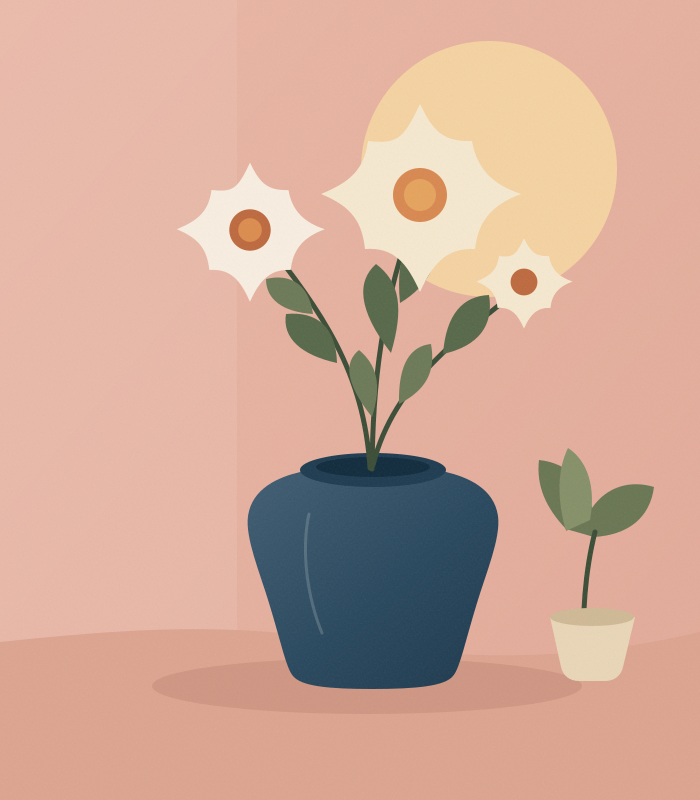

WELCOME TO YING
Good things
take shape.
A visual starting point for fresh perspectives, thoughtful details, and ideas that feel just right.
Get to know us
A LITTLE DIFFERENT. A LOT MORE YOU.The best ideas start with a little curiosity.
Good creative work can be equal parts feeling and thinking. It asks better questions, pays attention to the small things, and makes space for something new.
Ideas with
purpose.
From the first spark to the finishing touch, here are a few directions worth exploring.
Identity & direction
Finding the heart of an idea and giving it a distinct way to show up in the world.
Digital experiences
Considered digital spaces that are as enjoyable to use as they are to look at.
Creative thinking
Fresh perspectives, thoughtful storytelling, and the details that make it all click.
Less ordinary.
More meaningful.
There’s no one-size-fits-all way to make something great. Start by listening, stay open to the unexpected, and make every decision count.
See what's nextLet's make
it happen.
This is a starting point, ready to grow into something more.
Take another look around.